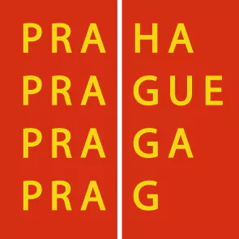
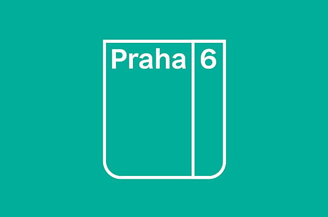

Každoročně pořádáme zimní tábor na horách v termínu jarních prázdnin Prahy 6 a letní stanový tábor prvních 14 dní v červenci. Tábory a činnost oddílu finančně podporují Hlavní město Praha, Městská část Praha 6 a Ministerstvo školství, mládeže a tělovýchovy.

